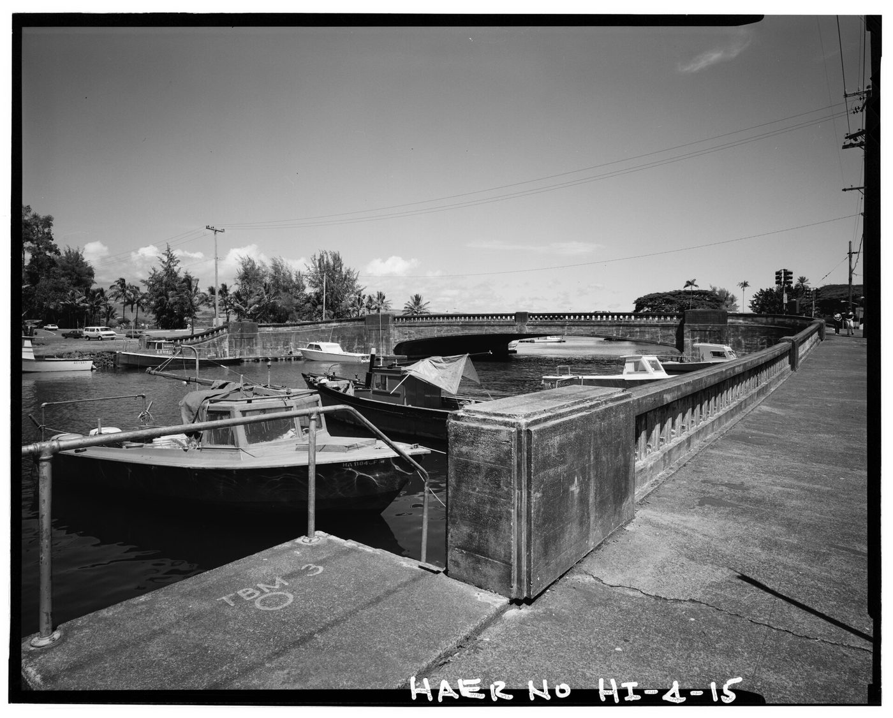
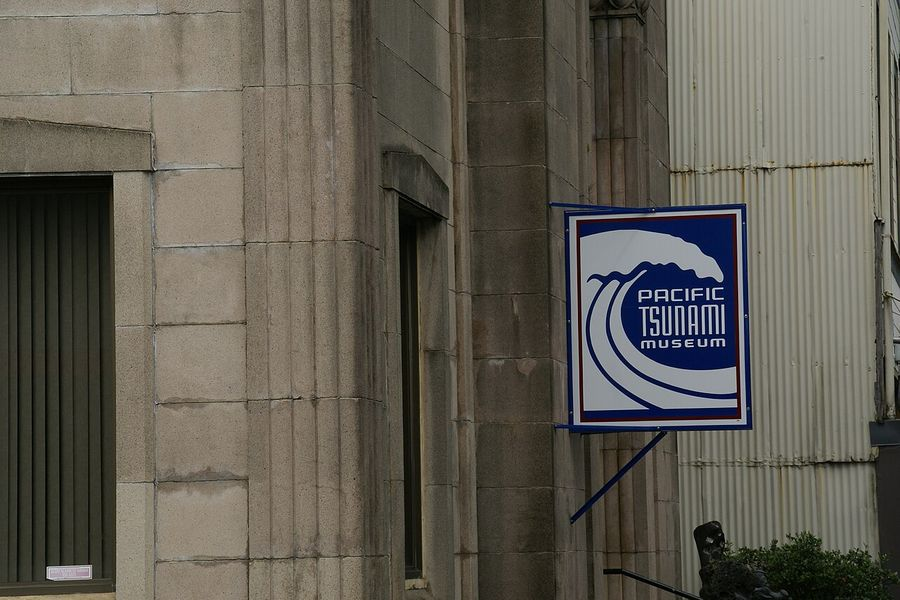
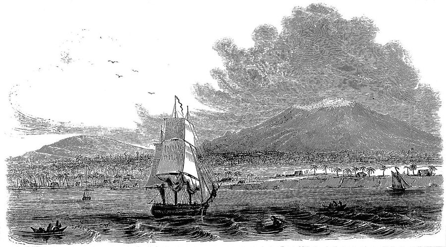

Hilo
United States · 19.7300°N 155.0600°W

Kiến trúc Hilo
Public domain
Make this Notebook Trusted to load map: File -> Trust Notebook
Điểm tham quan
Vườn quốc gia Núi lửa Hawaii (Kīlauea, Thurston Lava Tube)
not found
thác Rainbow & Akaka
vườn bách thảo nhiệt đới Hawaii
not found

Pacific Tsunami Museum

Mauna Kea (đài thiên văn, ngắm sao)
chợ nông sản Hilo
not found
Dệt may & smart textile
không có. Truyền thống **kapa** và lei/lauhala (đan lá hala) còn được dạy tại UH Hilo và các hālau địa phương
not found